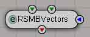
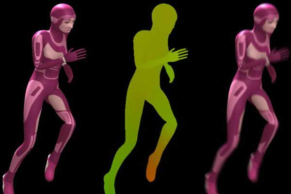
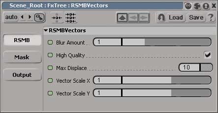
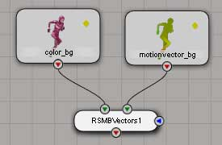
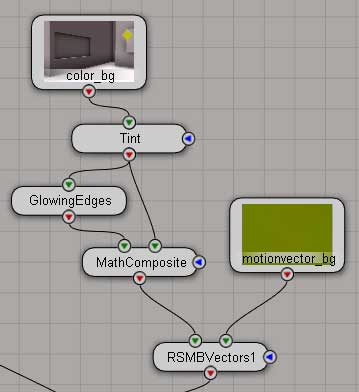
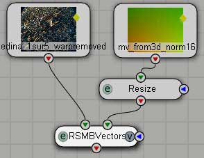

The ReelSmart Motion Blur "Vectors" (RSMB Vectors) plugin blurs images using vector images that you give to it. usually the vector images are rendered from xsi using the lm_2DMV shader , but they can also be generated by a image analysis software like Twixtor.

RSMBVectors parameters

- Blur Amount : The amount to blur. The default of 0.5 corresponds to a 180 degree shutter angle. A negative value removes motion blur (see the regular RSMB manual for more info)
- High Quality : toggles high quality on/off
- Max Displace : The maximum displacement used when you created the motion vector image files
- Vector Scale X,Y : Used to scale the motion vectors internally once they've been converted to floating point. Note: a -1 value for Vec Scale Y can correct for the Y component of your motion vectors pointing in the incorrect direction.
for more details , please read the RSMB manual
building a fxtree with RSMBVectors
regular setup :

applying 2d treatment before blurring :

using lo-def motion vectors :

Important note : if you are using lo-def vectors you should use the "scalex"
and "scaleY "values to scale the vectors so they are the expected length.
( For example if your render has 4K by 3K and your motion vectors are 2K by 1.5K, then
use 2,2 as Scale values in RSMB.)
Things to notice :
- you can render the motionvectors passes in 16 bits depth or float format to keep maximum precision. The Max Displace in float has no significant value (there is enough bits). In 8 bits although not recommanded, it is essential. In 16 bits you can just set it at something like the image res unless you are working with very large frames.)
- if you render the motion vector passes with verbose on and look at the render logs you can find out the maximum length of the motion vectors (in pixels). max_displace in lm_2dmv and RSMBVectors has to be superior or equal to this value
- you can disable the antialiasing for the motionvector passes (min0/max0 in the antialiasing render options , filter : triangle 1/1)
- RSMBVectors assumes that all input sources are premultiplied